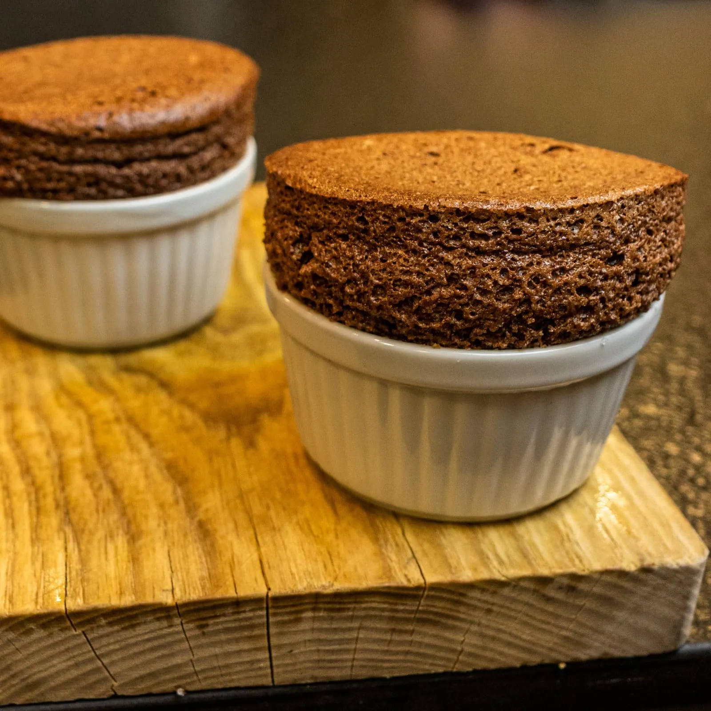

⏲ 20 minuts 👥 3 racions

Aquest cop apostem per una recepta bàsica, un clàssic de la pastisseria que agrada pràcticament a
tothom: el suflé de xocolata! Que no us faci por cap prejudici que pugueu tenir amb aquesta recepta.
Al vídeo veureu que no té gaire complicació, més enllà de seguir els passos de forma acurada, basats
en la proposta de @lasrecetasdemj. Unes postres més que agradables per a tots els públics, ideals
per a sorprendre familiars i amics!
Ingredients (3 racions):
- 85g de xocolata negra (70% cacau)
- 6g de cacau en pols sense sucre
- 4 clares d'ou
- 1 rovell d'ou
- 1 ceba de figueres
- 45g de mantega
- 35g de sucre
- En un bol al bany maria, desfem els 40 g de mantega amb els 85 g de xocolata.
- Retirem del foc, deixem temperar lleugerament i hi afegim un rovell d’ou, 35 g de sucre i uns 6 g de cacau pur en pols. Ho mesclem tot fins a tenir una massa homogènia.
- Muntem 4 clares d’ou amb una punta de sal. Les integrem amb molta cura a la mescla principal, amb moviments envoltants.
- Repartim mantega pels motlles de suflé, pintant de baix cap amunt amb un pinzell per tal de facilitar el creixement de la massa. Hi afegim també sucre pels voltants dels motlles. I repartim la mescla entre els tres.
- Coem al forn preescalfat a 200 graus durant uns 12-14 minuts. Els hem de servir just acabats de fer, i els podem acabar amb una mica de sucre de llustre.